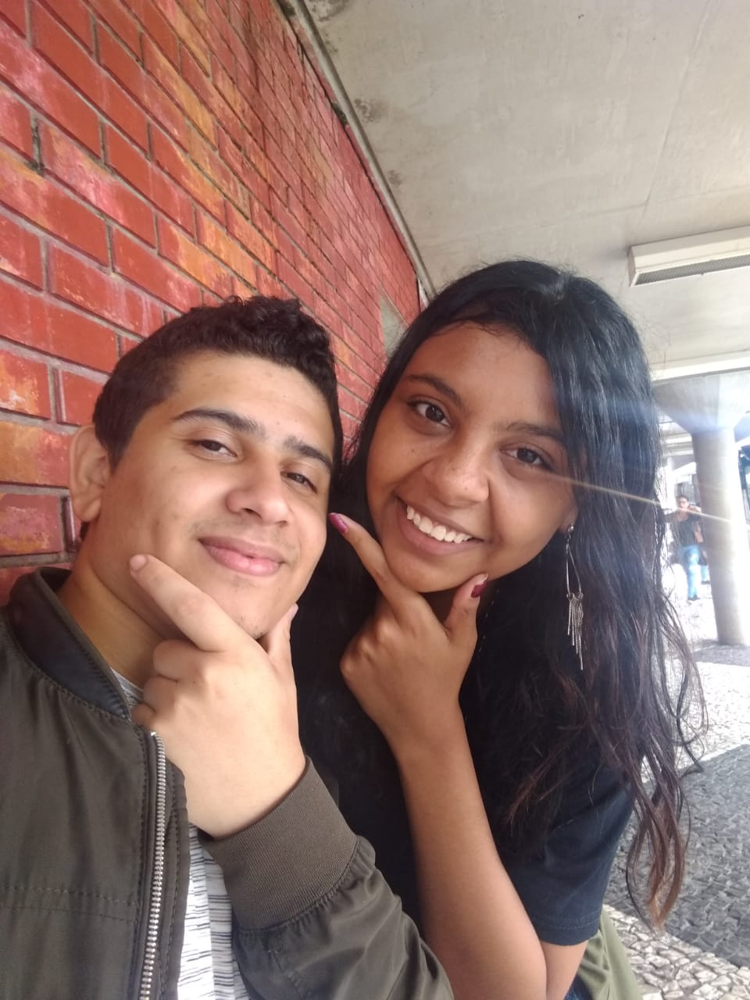

Lais participou de oficinas de desenho quando estudou em uma escola de periodo integral, ela ama não apenas desenhar, mas a arte como um todo, ela concluiu o ensino médio e atualmente está trabalhando, mas faz das artes o seu lazer e em seus momentos de descanso gosta de práticar.
O foco de Lais agora é
"Existe a possibilidade de melhorar" essa é a ideologia de Lais com relação aos seus afazeres e práticas.
